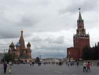
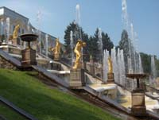
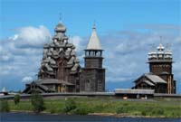
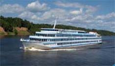

Bulletin N° 15
Octobre 2006

La Russie au fil de l'eau
ou croisière des Tsars
de Moscou à Saint-Pétersbourg

du 29 juin au 10 juillet 2006
Jeudi 29 juin, le groupe AZF MEMOIRE ET SOLIDARITE débarque à l'aéroport de Moscou. Quelques difficultés pour passer la douane car la carte d'immigration est écrite en alphabet cyrillique mais après s'être aidés les uns les autres, notre guide Roman, nous récupère et nous amène à bord du bateau le VATCHENKO. Accueil typique : un peu de pain trempé dans du sel pour renouer avec la tradition de bienvenue.
Deux grandes journées consacrées à la découverte de MOSCOU, capitale de la Russie, s'ensuivent. Et là, quel choc ! Moscou la rouge, Moscou la sainte va nous offrir ses aspects les plus insolites où églises et monastères orthodoxes côtoient le gigantisme des avenues et des gratte-ciel staliniens pas si laids que ce que l'on peut prétendre.
Direction première, le KREMLIN, véritable forteresse, domine la ville et la Moskova. L'enceinte de plus de 2 kms se hérisse de tours fortifiées. Symbole du pouvoir russe, le Kremlin rassemble des édifices comptant parmi les plus célèbres et les plus impressionnants qu'on ait l'occasion de voir : cathédrales, églises aux coupoles dorées, musées mais aussi palais où siège la présidence de la Russie. Jouxtant le Kremlin, se trouvent la célèbre Place Rouge (la belle en russe), le mausolée de Lénine et la magnifique cathédrale Basile le Bienheureux aux mille reflets. Personne ne reste indifférent devant les bulbes chatoyants des églises, par les iconostases exceptionnelles se composant de quatre ou cinq rangs d'icônes. Ici, dans cette ville le temps s'arrête et nous renvoie à l'histoire tumultueuse de ce pays dont la France des rois a été, selon les dirigeants, l'alliée ou l'ennemie�
La visite de la Galerie TRETIAKOV nous offre un large panorama de l'art russe, notamment des collections d'icônes et nous permet de mieux apprécier ces représentations religieuses.
La visite du métro moscovite « by night » va nous permettre de découvrir de véritables �uvres d'art inspirées de la Révolution, de la guerre ou de l'idéal socialiste.
Il est temps de lever l'ancre et de découvrir une autre Russie en parcourant au fil des fleuves et des lacs les 650 kms qui nous séparent de Saint-Pétersbourg. Difficile de décrire la magie de cette croisière. Il y a bien sûr la beauté du circuit qui nous fait découvrir certains joyaux de la Sainte Russie et lire, sans en avoir l'air, quelque mille ans d'histoire russe. Mais c'est avant tout l'atmosphère poétique des paysages qui enchante : forêts de bouleaux et de résineux, isbas classiques ou reconstruites, le bois qui domine ; la magie s'opère devant le calme environnant.
Ainsi, alternant la vie à bord du bateau où sont dispensés des cours d'histoire, de cuisine, de langue, de chants, de danse russes, des soirées musicales, dansantes, déguisées, d'élection de Miss et Mister Croisière (bravo Jean-louis tu remportas le titre !) des jeux de connaissance, loto, des tournées de vodka !� et bien sûr la projection des matches de la coupe du monde de foot, nous allons faire plusieurs escales , notamment à Ouglitch, Yaroslavl, Kirillov, Kiji, Mandroga.
Et puis, le terme du voyage arrive par quatre jours à Saint-Pétersbourg, ville aux palais plus chatoyants les uns que les autres, aux musées célèbres dont celui de l'Ermitage aux magnifiques collections, aux multiples canaux et bras de la Neva, le tout dans cette ambiance magique des nuits blanches, où le soleil ne se couche pratiquement pas, où la lumière est indescriptible.
Marie Françoise PEREZ
 
___________________________________
MISE A DISPOSITION DES LIVRES
Nous remercions tous les donateurs. Après un démarrage poussif, le stock de revues et de romans est en constante progression. N'hésitez pas à emprunter et découvrir.
____________________________________
RANDONNEES
Elles ont débuté en septembre. Elles se déroulent tous les jeudis après-midi pour une durée de deux à trois heures.
Contactez Jacques RIGAL ou Sébastien SANCHEZ au 05.62.11.45.50 .
___________________________________
Page 1 : Le Mot du Président
Page 2 : Commission Vérité et Mémoire
Page 3 : Voyages & Divers
Page 4 : Visite de St Gilhem le Désert & Divers
Page 5 :C.R. voyage en Russie & Divers
Page 6 :C.R. voyage en Croatie |